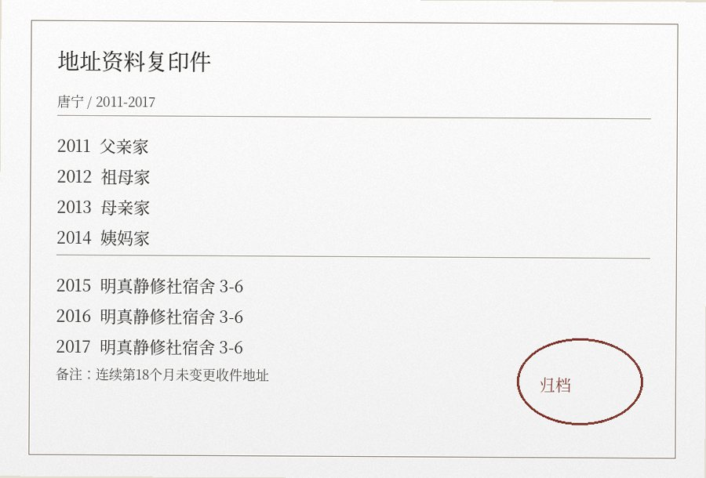

唐宁，24岁。没有死亡亲属。她从2010年前后开始参加日常交流，后来进入归席静修。
| 年份 | 资料来源 | 当时填写 |
|---|---|---|
| 2011 | 学校联系表 | 父亲家；紧急联系人填祖母 |
| 2012 | 快递存根 | 祖母家；背面注明“先别用了” |
| 2013 | 银行资料变更 | 母亲家 |
| 2014 | 兼职登记 | 姨妈家；租期到次年春 |
| 2015 | 宿舍初住 | 明真静修社宿舍3-6 |
| 2016 | 续住登记 | 宿舍3-6 |
| 2017 | 收件登记 | 宿舍3-6 |
“你们觉得那个地址很吓人。”
“我第一次填了三年都不用改。”
“我小时候填学校表格最烦的是地址。因为我不知道下学期还住不住那里。”

唐宁留下的学校联系表、快递存根、兼职登记与宿舍续住单。四份纸来自不同年份，原卷没有另做地址汇总。
住宿卷经办署名
2011 / 住宿表修订会议
“统一期限会让部分刚进入状态的人觉得被赶走。”——林慧贞
2015 / TN-03初住登记
经办：林慧贞。床位3-6，柜位3-6-B；丧亲对象栏空白。
成员卷比对
把七年的地址按顺序点一遍
本页不预设主题词。按年份查看登记变化，留意从哪一年起地址栏不再改动。
登记表之外
“我不喜欢别人问我家在哪里。”
“不是因为不想说，是每次答案都不一样。”
“宿舍3-6不好看，墙还掉皮，可我第一次知道下个月回来床还在。”
| 年份 | 登记备注 |
|---|---|
| 2011 | 学校材料寄父亲家；本人实际多住祖母家。 |
| 2012 | 祖母住院后临时搬出，纸箱未拆完。 |
| 2013 | 母亲家增加婴儿床，本人睡客厅。 |
| 2014 | 姨妈租房合同只到次年春。 |
宿舍3-6
维修单：窗框漏风；靠门插座接触不良；2015年冬季墙皮受潮，床头要求离墙二十厘米。卫生间在走廊尽头。
2015 / 第一次延住理由
“东西不用再装箱。”
2016 / 登记表修改
“是否考虑回家”一栏中，“家”字被划掉，改为“原住址”。
修持登记
丧亲对象：无。 返触：间断。 还耳：未登记。 固定柜位：3-6-B。
同卷附页 · 地址原件、纸箱与宿舍杂项（5组）
收件地址
唐宁保存最多的不是遗物，是写过地址的纸。学校表格、快递单、银行卡资料、兼职登记，每搬一次都要改。她把几张旧快递单折起来夹在宿舍登记表后面。
旧快递单背面
“这个地址别用了，奶奶那边没人收。”
2014-09 / 手机备忘
“身份证地址不用改，银行卡要改，快递先写姨妈家。学校那个等老师问再说。”
2016-03 / 收件登记
连续第18个月使用同一地址：明真静修社宿舍3-6。
搬家纸箱上的字
箱1 / 2012
“书，不拆。下个月可能还搬。”
箱2 / 2013
“冬衣。妈妈家衣柜上层放不下。”
箱3 / 2014
“先别扔纸箱，姨妈合同到明年三月。”
2015年入住宿舍后，登记员问纸箱是否需要暂存。她留下两个，其余拆平放进回收处。第二年维修漏水时，值日人员提醒她把柜子里的旧纸箱扔掉，她说：“那个可以扔了，反正我现在知道东西放哪。”
她第一次续住时并没有参加完整的五还练习。登记表上“丧亲对象”一直空着，只有“床位”“柜号”“紧急联系人”每年按时填。
几张没有放在一起的登记
2011 / 学校联系表
通讯地址写父亲家，紧急联系人却填祖母。辅导员在边上写：“本人说平时多住奶奶处。”
2012 / 快递退件
收件地址仍写祖母家。退件原因：“无人签收”。面单背面是唐宁写的：“奶奶住院，这个地址先别用了。”
2013 / 银行资料变更回执
通讯地址改母亲家。联系电话没有改。回执右上角用铅笔写：“身份证那个不用动。”
2014 / 兼职登记
地址写姨妈家，租住期限到次年三月。表格“是否长期居住”一栏没有勾。
2015 / 宿舍初住
床位3-6，柜位3-6-B。紧急联系人仍填祖母。第一张收件登记只写“可以放前台”。
2016年的续住单没有再问“临时住址”，只把上一年的宿舍号抄了下来。唐宁在签名旁边写错了月份，划掉重写；这是几份登记里第一次没有修改地址栏。
四份不同来源的地址
2011 / 学校奖学金申请表
通信地址写父亲家。班主任在旁边补：“本人多数时间住祖母处，通知请同时电话联系。”
2012 / 快递退件贴
原地址为祖母家。红章：“收件人已搬离”。唐宁在背面写：“这次寄妈妈那边。”
2013 / 银行资料变更回执
联系地址改为母亲家；紧急联系人未改。柜员备注：“本人称住址仍可能变更”。
2014 / 兼职登记表
住址写姨妈家，右上角用圆珠笔加：“只住到明年春。”
2015 / 静修社收件登记
地址：宿舍3-6。下方第一次没有手写“暂住”“代收”或“之后再改”。
这些纸的抬头、纸张和字迹都不一样。2015、2016、2017三份登记的地址栏均为“宿舍3-6”；后两份没有地址变更痕迹。
宿舍里真正留下来的东西
唐宁住进3-6时带来的东西并不多：两个纸箱、一只旅行袋、一床旧被子、三本课本和一只电饭锅。第一年的登记表里，她还把每件东西都写了名字，怕搬走时落下。
2015-05
纸箱1拆平放床底。纸箱2留着装冬衣。旅行袋挂门后。电饭锅借给隔壁两天。
2015-11
换厚被。旧被没地方放，问能不能寄存。值日员说柜顶可以放到开春。
2016-04
春季清理。她把两个旧纸箱一起扔了。登记员问要不要留一个搬家用，她说“不用了”。
2016-12
第一次买小书架。收据背面写：“尺寸别超过70，门口那面墙窄。”
2017-03
快递送到前台，收件地址仍是宿舍3-6。她没有再打电话确认“还能不能收”。
后续值日册里，她登记的五还项目仍很少；周二洗衣、月底交住宿费、快递地址和按季节整理柜物的记录则连续出现。